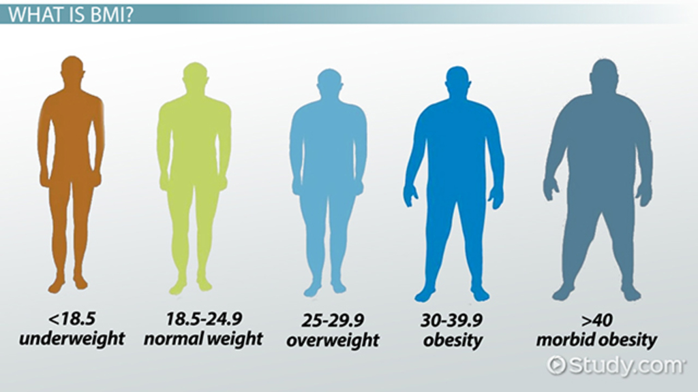
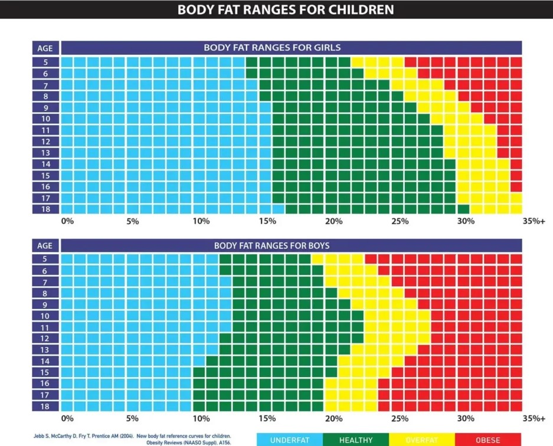
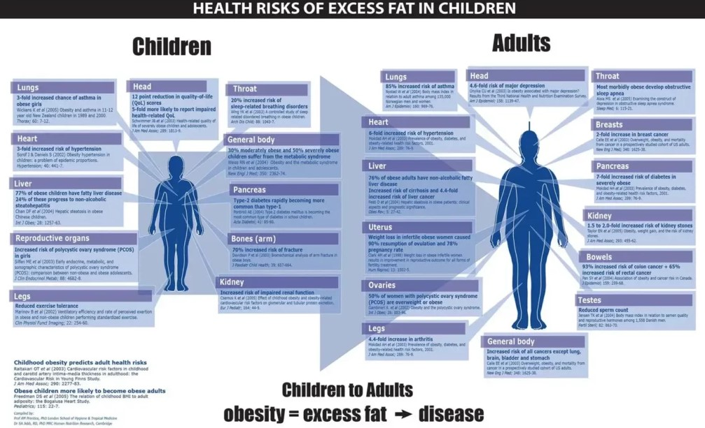

Body mass index (BMI) is a common method for assessing a person's weight in relation to their height. It's important because it can help determine a person's health risk and potential for future health issues

BMI can be calculated using metric or imperial (US) units. You can calculate your BMI using an online BMI calculator or with the formula: BMI = (weight in pounds x 703) / (height in inches x height in inches).

Córdoba Argentina Temple

Children and adult comparition BMI